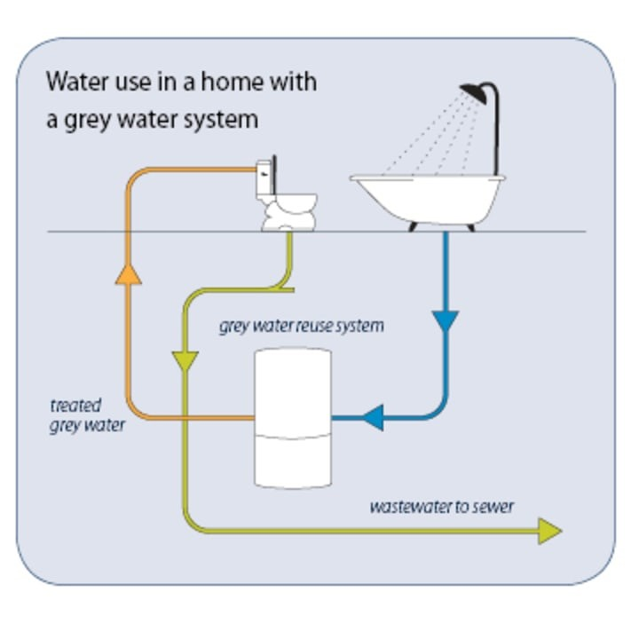

Introduction
Understanding Water Scarcity
Image Source: wrsc.org, World Resources SimCenter
Water is essential for life, yet it is a limited resource. As the global population grows, the demand for water increases, leading to water scarcity in many parts of the world. According to UNDESA on their Water for Life 2005-2015, even though there is enough freshwater on earth, it is still incapable of doing its purpose to seven billion people for it is distributed unevenly and too much of it is wasted, polluted and unsustainably managed. How can we ensure that there is an availability of freshwater for future generations if we cannot contribute to the efficient use and management of water today?
The Connection Between Physics and Water ConservationPhysics plays a crucial role in water conservation by helping us understand how to use energy and water more efficiently. It explains how water exists in different physical states—solid, liquid, and gas—through the Conservation of Mass, where water changes form but is never lost. These changes show how important it is to use water carefully since it’s a limited resource.
Physics principles are also key in solving water-related challenges, from energy consumption in water heating to the fluid dynamics involved in irrigation systems. Techniques like drip irrigation, which use physics to deliver water directly to plant roots, help minimize waste. Additionally, advancements in technology, grounded in physics and engineering, continue to improve the efficiency of water use and management systems, ensuring sustainable solutions for the future.
ENERGY IN WATER SYSTEMS
The Physics of Energy in Water UseIn physics, energy is the ability to do work, and work is done when a force moves an object over a distance. In water systems, energy is required for various processes like extracting water from sources, pumping it through pipes, and heating it for domestic or industrial use.
Power Calculation: The power required for tasks involving water can be calculated using the formula P = W/t , where P is power (watts), W is work (joules), and T is time (seconds).
In water systems, energy is needed to pump, transport, and process water. By calculating the power required for these tasks, we can identify ways to reduce energy consumption. For example, using energy-efficient pumps reduces the electricity needed to move water, helping save both energy and water. This is important because saving energy often leads to using less water in power generation processes.
Heating WaterThe energy needed to heat water is determined by Q=mcΔT, where Q is heat energy (joules), M is mass (kg), C is the specific heat capacity (4.18 J/g°C), and ΔT is the temperature change.
https://www.waterheatersnow.com/blog/installing-electric-tankless-water-heater
Heating water for domestic or industrial use can consume a lot of energy. By calculating how much energy is needed to heat a specific amount of water, we can find more efficient ways to manage it. For example, using tankless water heaters, which only heat water when needed, reduces energy waste compared to traditional water heaters that keep a tank of water hot all the time. This cuts down on both energy and water waste, promoting conservation.
HydropowerHydropower systems convert the kinetic and potential energy of flowing water into electricity using turbines, relying on the height difference and flow rate to maximize energy generation.
Image Source: Clark Public Utilities
Hydropower systems convert the energy of flowing water into electricity without consuming the water itself. By optimizing the height difference and flow rate, hydropower plants can generate electricity efficiently while using the same water repeatedly. This sustainable approach helps conserve water because it avoids depleting water resources, unlike other energy sources that may rely on water in ways that cause evaporation or contamination.
FLUID DYNAMICS IN WATER MANAGEMENT
Fluid dynamics is critical for water conservation because it helps us understand how water moves through various systems, such as irrigation, plumbing, and distribution networks. Two key principles in fluid dynamics—Bernoulli's Principle and Pascal’s Law—play an essential role in designing efficient systems that conserve water by reducing waste and improving performance.
- Bernoulli’s Principle: This principle states that as the speed of a fluid (like water) increases, its pressure decreases.
- Pascal’s Law: According to this law, any pressure applied to a fluid is transmitted equally in all directions. This principle is essential for water distribution systems, such as pipes in homes or large-scale water supply networks. It ensures that water pressure is consistent throughout the system, which means water can be evenly distributed to different areas without large variations in pressure. This uniform pressure helps prevent leaks or bursts that could waste water and ensures that water is delivered efficiently to all parts of the system.

Image Source: Thach Nguyen
This relationship is vital when designing irrigation systems and plumbing networks because it helps ensure that water flows efficiently without wasting pressure. In irrigation, for example, this principle allows us to create systems where water flows quickly to reach plants but at the right pressure to avoid overwatering or evaporation. Efficient design minimizes water loss, ensuring more water reaches its target without unnecessary waste.
https://youtu.be/qGQ4fojjwvQ?si=8Pau0acyvQoGGg3f
Both Bernoulli’s Principle and Pascal’s Law contribute to optimizing water use by making sure that water flows efficiently, reaches its destination with the right pressure, and reduces waste from leaks, overwatering, or pressure losses.
THERMODYNAMICS AND WATER CONSERVATION
Thermodynamics plays a key role in water conservation, especially through the methods of heat transfer—conduction, convection, and radiation. These principles are essential in managing water use efficiently, particularly in industries that rely on water for cooling machinery and processes.
How do conduction, convection and radiation differs?- Conduction transfers heat through direct contact between objects, convection moves heat in fluids like liquids or gases through rising and sinking currents, and radiation transfers heat through electromagnetic waves without needing a medium. Each method differs in how it works and what materials are involved.
- Conduction: This is the process where heat is transferred through direct contact between materials. In the context of water conservation, conduction is commonly used in cooling systems, where heat from industrial machinery is transferred to water through pipes or heat exchangers. As water absorbs the heat, it helps cool the equipment down, making the system more efficient. Efficient conduction helps reduce the amount of water needed for cooling because the water can absorb more heat before it needs to be replaced or cooled again. This reduces overall water usage.
- Convection: This involves the movement of heat through fluids (like water) as they circulate. In cooling systems, as water absorbs heat, it becomes less dense and rises, while cooler water sinks. This natural circulation helps distribute heat evenly, allowing for more efficient cooling of machinery or processes. Efficient convection minimizes the need for excessive water use by ensuring that heat is evenly removed from the system, reducing the amount of water needed for cooling. This is particularly useful in large-scale systems like power plants or industrial facilities where cooling is continuous.
- Radiation: This is the transfer of heat through electromagnetic waves, which doesn't require direct contact between objects. While radiation is less significant in water systems compared to conduction and convection, it can still play a minor role in situations where heat is transferred over long distances or from very hot surfaces. However, it is generally not the primary method for heat transfer in water conservation systems.
Understanding these thermodynamic principles is essential for optimizing water use in industrial processes, especially those that involve cooling. By improving the efficiency of heat transfer, industries can reduce the amount of water needed to manage heat, minimizing waste and conserving both water and energy. Additionally, more efficient cooling systems also reduce the need for frequent water replacement, further supporting sustainable water management practices.
REAL-WORLD APPLICATIONS OF PHYSICS IN WATER CONSERVATION
Water-efficient technologies use physics to help save water and reduce waste. Here are some examples that show how they work:
- Low-Flow Showerheads: These showerheads use Bernoulli's Principle to keep water pressure high while reducing the amount of water flowing out. By mixing water with air, they let you enjoy a strong shower with less water—about 1.5 to 2.5 gallons per minute instead of the usual 2.5 to 5 gallons. This helps save water and reduces the energy needed to heat it, which also lowers utility bills.
- Smart Irrigation Systems: These systems use sensors and weather data to water plants only when they need it. By applying fluid dynamics, they adjust the water flow based on soil moisture, preventing overwatering and reducing water loss from evaporation or runoff.
- Greywater Recycling Systems: These systems take water from sinks, showers, and laundry and reuse it for things like watering plants or flushing toilets. They can also use thermodynamics to recover heat from wastewater, saving both water and energy. 
- Rainwater Harvesting Systems: These systems collect rainwater for non-drinking purposes like gardening or cleaning. Using fluid mechanics, they are designed to capture and store rainwater efficiently, reducing water waste through evaporation.
- Water-Saving Appliances: Dishwashers and washing machines are made to use less water while still cleaning well. They often have sensors that adjust the water amount based on the size of the load, saving both water and energy.
Image Source: Big B’s Plumbing
Image Source: HydroPoint
Image Source: Ecovie
Image Source: BYJU’S
THE ROLE OF PHYSICS IN WATER CONSERVATION
Physics plays a key role in solving the pressing challenges of water conservation. By using principles like energy efficiency, fluid dynamics, and thermodynamics, we can create technologies and systems that reduce water waste and promote sustainable use. As we face increasing water scarcity, it is more important than ever to integrate these scientific concepts into our daily practices and infrastructures. Through continuous research and innovation, we can build water systems that are not only efficient but also resilient, ensuring that this valuable resource is protected and preserved for future generations.
References
Water scarcity | International Decade for Action “Water for Life” 2005-2015. (n.d.). https://www.un.org/waterforlifedecade/scarcity.shtml
The conservation of matter during physical and chemical changes. (n.d.). https://education.nationalgeographic.org/resource/conservation-matter-during-physical-and-chemical-changes/
Admin. (2023, May 8). Water Conservation Methods – Water Management Technique & Treatment. BYJUS. https://byjus.com/chemistry/water-management/
Anoriega. (2022, October 18). Water Conservation and STEM | UT Austin Boot Camps. UT Austin Boot Camps. https://techbootcamps.utexas.edu/blog/water-conservation-and-stem/#projects
Energy from water – Energy Education. (n.d.). https://energyeducation.ca/encyclopedia/Energy_from_water
How Hydropower works. (n.d.). Energy.gov. https://www.energy.gov/eere/water/how-hydropower-works
Hydropower Basics. (n.d.). Energy.gov. https://www.energy.gov/eere/water/hydropower-basics
Bernoulli’s equation – Energy Education. (n.d.). https://energyeducation.ca/encyclopedia/Bernoulli’s_equation
Admin. (2023, May 24). Bernoulli’s Principle & Bernoulli Equation – Definition, Derivation, Principle of Continuity, Applicatio. BYJUS. https://byjus.com/physics/bernoullis-principle/
OpenStax. (n.d.). 14.6 Bernoulli’s Equation | University Physics Volume 1. https://courses.lumenlearning.com/suny-osuniversityphysics/chapter/14-6-bernoullis-equation/
Water Handbook – Cooling Water Systems-Heat Transfer | Veolia. (n.d.). https://www.watertechnologies.com/handbook/chapter-23-cooling-water-systems-heat-transfer
The Physics Classroom tutorial. (n.d.). https://www.physicsclassroom.com/class/thermalP/Lesson-1/Methods-of-Heat-Transfer
Urone, P. P., & Hinrichs, R. (2020, March 26). 11.2 Heat, specific heat, and heat Transfer – Physics | OpenStax. https://openstax.org/books/physics/pages/11-2-heat-specific-heat-and-heat-transfer
Richardson, D. (2024, May 24). 4 Types of heat transfer mechanisms for cooling electrical enclosures. Thermal Edge. https://thermaledge.com/4-types-of-heat-transfer-mechanisms-for-cooling-electrical-enclosures/
Image Sources:https://images.app.goo.gl/VxxFmcwK5HLE5vjJ6
https://www.researchgate.net/figure/Population-and-water-demand-in-Singapore-18_fig1_281571252
https://education.nationalgeographic.org/resource/conservation-matter-during-physical-and-chemical-changes/
https://www.sciencedirect.com/science/article/abs/pii/S0959652618339064
https://powerzone.clarkpublicutilities.com/learn-about-renewable-energy/hydroelectric-power/
https://www.waterheatersnow.com/blog/installing-electric-tankless-water-heater
https://www.researchgate.net/figure/Bernoullis-Principle-Bernoullis-principle-can-be-considered-to-be-a-statement-of-the_fig3_351245956
https://images.app.goo.gl/cf6PqgvfDPwRpWPF9
https://www.hydropoint.com/what-is-smart-irrigation/
https://www.ecoviewater.com/greywater-recycling-inside-buildings/
https://byjus.com/biology/rainwater-harvesting/
Video Sources:
https://youtu.be/3AA8s3Jtetg?si=j-6HANNEvMRak2Kw
https://youtu.be/q8HmRLCgDAI?si=RG7mLl2iGjC6AG6o
https://youtu.be/qGQ4fojjwvQ?si=8Pau0acyvQoGGg3f
https://youtu.be/e9H2DDKgnr4?si=CHXsvi1Vxa_-tSJm